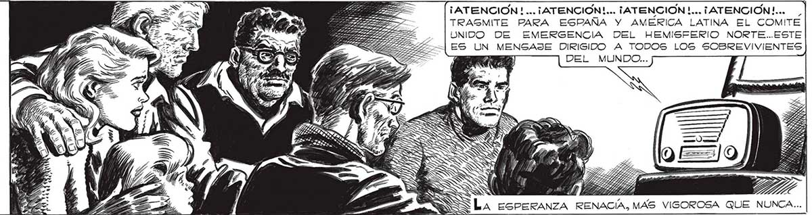

320 LA RADIO SIGUIO REPITIENDO LA MISMA PALABRA DURANTE MAS DE DIEZ MINUTOS... AFUERA DE LA GOTA DE VIDA QUE ERA NUESTRA CASA, ADIVINABAMOS, AGOBIANTE, TODA LA MUERTE DE LA TERRIBLE NEVADA ... ES VERDAD QUE LA TRASMISIÓN NO ERA NADA EXPLICITA: SE LIMITABA A UNA SOLA PALABRA REPETIDA GIN CESAR. PERO TENIAMOG TANTA ANSIA, TANTA HAMBRE DE ESPERANZA QUE, NINGUNO LO DIJO, TODOS PRESENTIMOS QUE ES TABAMOS AL FINAL DE NUESTRAS PENURIAS. EL ETERNAUTA CALLO, Y POR UN MOMENTO QUEDO MIRANDO AL VACIO. UNA SONRISA CANSADA. LE PLEGO' LOS LABIOS. Y MENEO LA CABEZA, COMO ) DICIENDOSE: “¡QUE TONTOS FUIMOS!” ¡ATENCION! ... ¡ATENCION!... ¡ATENCION !... ¡ATENCION !... TRASMITE PARA ESPAÑA Y AMÉRICA LATINA EL COMITE Tanto rePmO “Wo AS - on 0 SÉ _ |UNIDO DE EMERGENCIA DEL HEMISFERIO NORTE..ESTE LA RADIO LA y> > TG y A ZE) ES UN MENGAJE DIRIGIDO A TODOS LOS SOBREVIVIENTES MISMA PALABRA E > A ya ESAS: cr > = IFR DEL MUNDO... QUE EMPEZAMOS A FATIGARNOS. Y ADIVINÉ EN MOSCA, EN PABLO, EN ELENA, LOS PRIMEROS SINTOMAS DE INQUIETUD. LA ESPERANZA AFLOÑ JABA ... Ñ y > ESPERANZA RENACIA, MAS VIGSOROSA QUE NUNCA... 4 _PERO NUESTRA REACCION NO SE HA HECHO ESPERAR. Y EL PRIMER GRAN ÉXITO HA SIDO ANOTADO A FAVOR DE LA ESPECIE HUMANA... EL NÚCLEO INVASOR QUE DOMINABA LA CIUDAD DE BUENOS AIRES, HA SIDO ANIQUILADO AL SER VULNERALA INESPERADA INVASION QUE EN FORMA TAN CATASTROFICA SE HA ABATIDO SOBRE EL GÉNERO HUMANO SIGUE TRATANDO DE HACER PIE EN LA TIERRA, Y ES NECESARIO CONCENTRAR LOS ESFUER¿ZOS5 DE TODOS... EL ENEMIGO HA TENIDO UN GRAN ÉXITO INICIAL...
